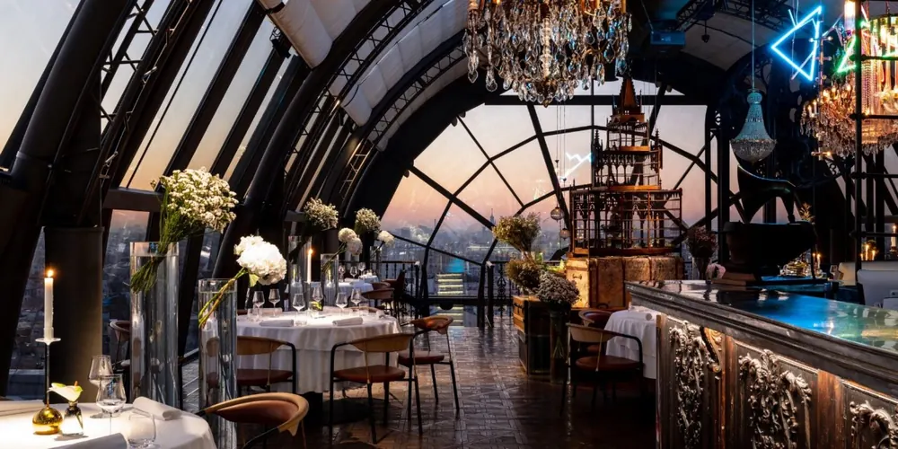
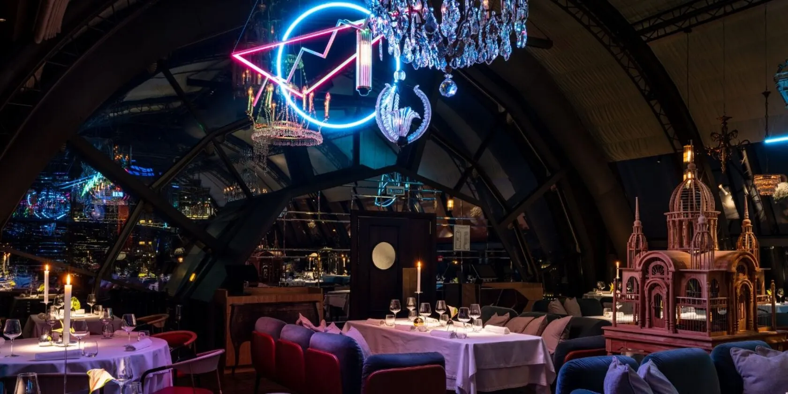
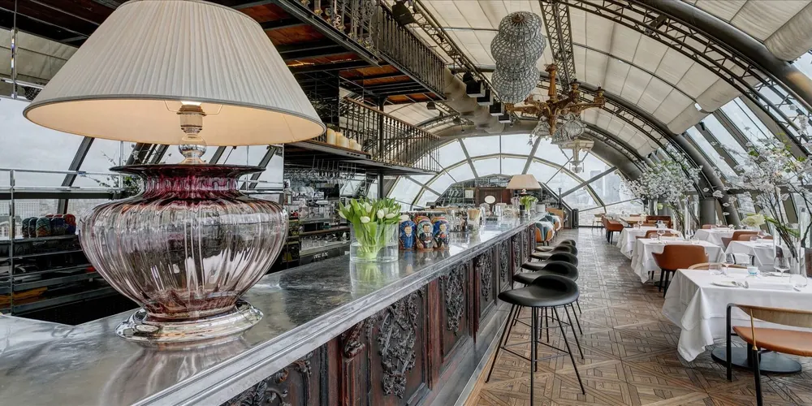
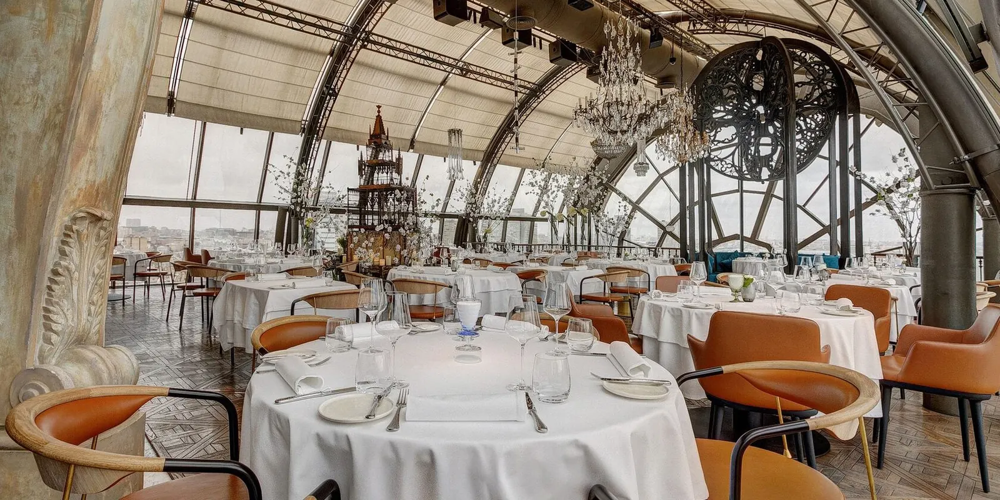
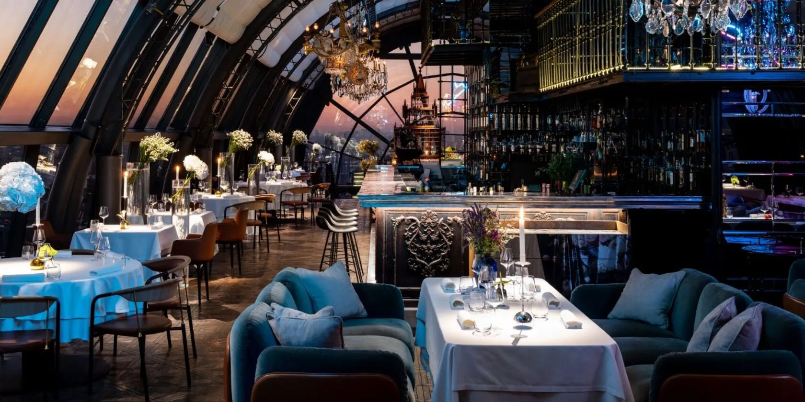
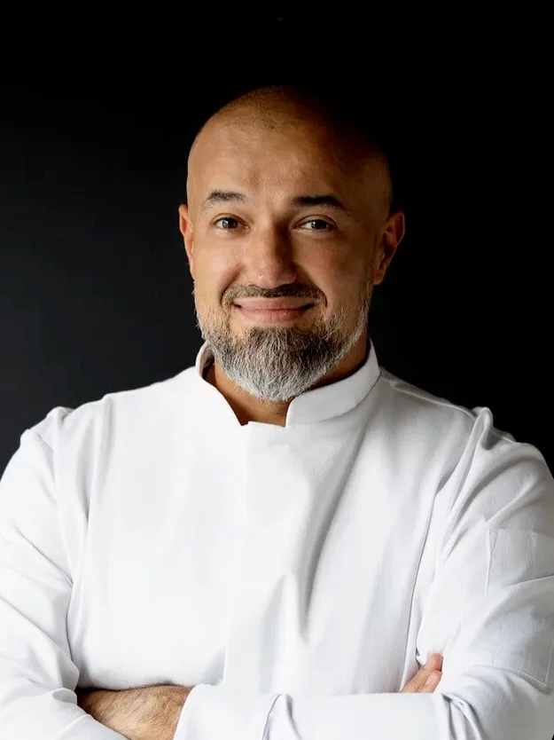
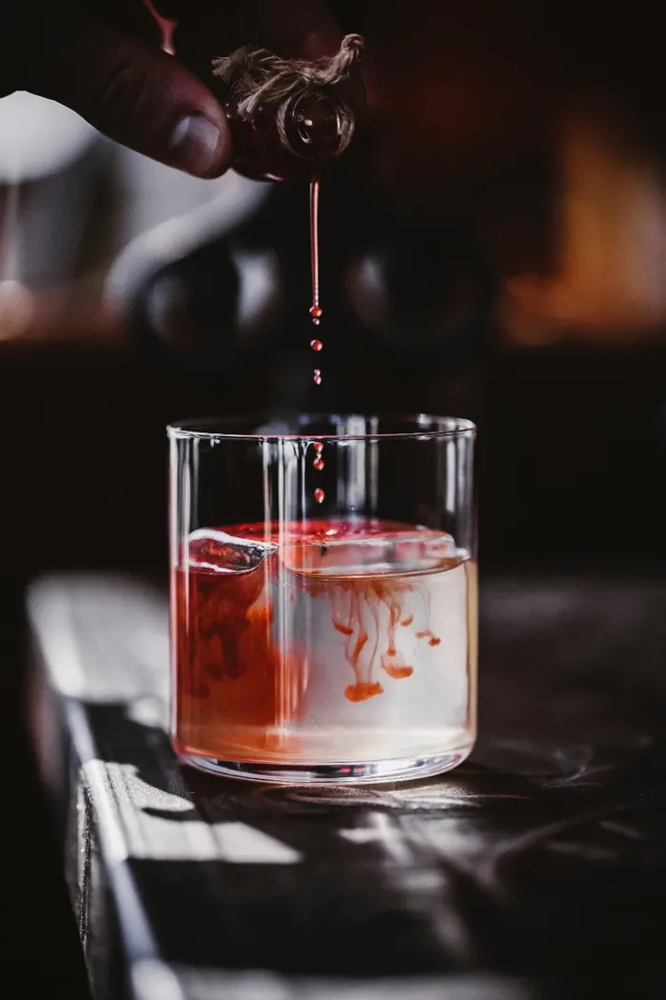
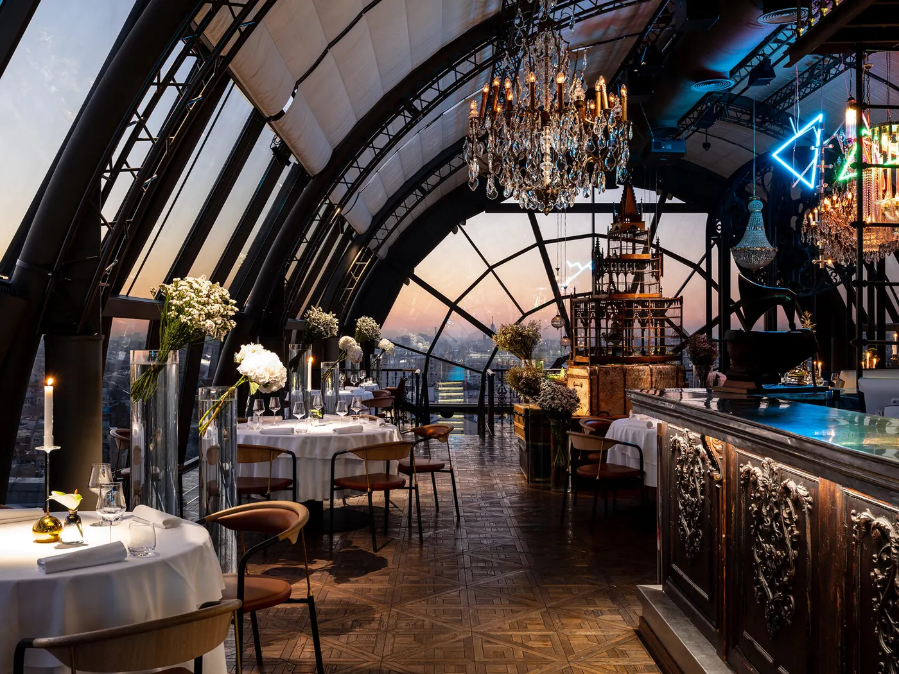
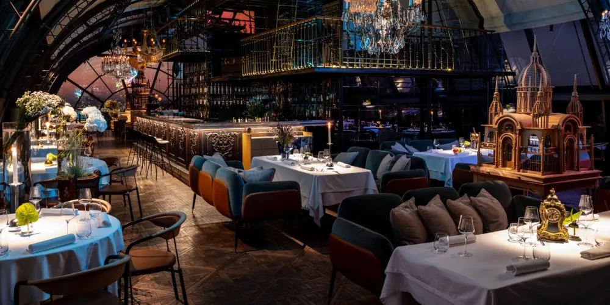

A
♥
♥
♥
Картофельные пирожки с салом и грибным узваром
A♥


Москва · с 2011
Следуйте за белым кроликом. Он, как всегда, опаздывает

Глава I · Падение
Всё начинается
с кроличьей норы
Падать — недолго.
Шестнадцать этажей
Только эта нора
ведёт не вниз
а вверх

Глава II · Подъём
Смоленская площадь, 3
над крышами Арбата


Глава III · Купол
Стеклянный купол
Сад под небом
Москва — на ладони

Глава IV · Философия
Старинные русские рецепты
Современные техники
Продукты фермеров и собирателей
И немного современного искусства
Chef’s Table · Netflix · звезда MICHELIN · №13 The World’s 50 Best


Глава V · Бар
Глава VI · Сезон
дегустационный сет шефа · десять карт, десять подач
17 500 ₽
винное сопровождение — 9 800 ₽Всё меню (PDF)